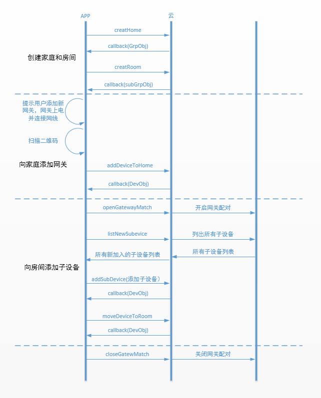

IOS客户端开发指导
简介
SDK即Software Develop Kit，开发者将基于此，快速的开发出APP。本文详细介绍iOS平台的SDK。ablecloud为开发者提供了一些通用的云端服务，最终开发出来的APP会和云端服务交互，因此SDK中涉及到和云端交互的接口，均采用异步回调方式，避免阻塞主线程的执行。 在《SDK简介》篇，我们知道SDK大体上提供了6大功能，本文将逐一进行介绍。
开发环境设置
系统准备
在进行开发前，需要对系统以及环境进行设置。目前框架支持Objective-C、C语言，因此系统准备基本都是和iOS开发相关，如Mac OS X、Xcode等。 + OS X 系统建议采用Mac OS X 10.8以上的版本 + Xcode 安装Xcode，建议采用6.0以上版本 + ablecloud 下载ablecloud开发框架并解压
Xcode
- 新建工程 选择新建iOS Application，根据需要选择，建议选择Single View Application。 点击Next进入下一个页面，根据情况填写Product Name/Organization Name/Organization Identifier等信息。 填好后点击Next，进入下一步，填写好存放路径。 至此，新建工程完成。
- 导入AbleCloudLib 按照步骤1完成了工程的新建，接下来需要将AbleCloudLib导入到工程中。 右键点击工程中想要导入的Group选择 Add Files to "your project name"... 选择AbleCloudLib的路径，勾选Copy items if needed，点击Add添加。 完成上述步骤后，我们将在工程视图里面看到该目录。 至此，开发者开发服务所以来的ablecloud开发框架库添加成功。
- 本地运行
Xcode下直接Command + R运行。
注：如果是模拟器运行请导入模拟器的静态库，如果是真机运行则导入真机静态库，否则在编译的过程中会失败。
帐号管理
该服务用于管理和某一智能设备相关的用户，比如查看用户的基本信息/状态等。发现异常用户时，服务程序能及时做出相应操作。
接口说明
引入头文件
import "ACAccountManager.h"
账号管理类
@interface ACAccountManager : NSObject
普通帐号注册流程
1、检查手机号是否已注册
+ (void)checkExist:(NSString *)account
callback:(void(^)(BOOL exist,NSError *error))callback;
2、发送验证码
/**
* 发送手机验证码 (有关规定每天向同一个手机号发送的短信数量有严格限制)
* @param account 手机号码或者邮箱地址，目前只支持手机号码
*/
+ (void)sendVerifyCodeWithAccount:(NSString *)account
template:(NSInteger)template
callback:(void (^)(NSError *error))callback;
3、检测验证码正确性
/**
* 校验手机验证码
* @param account 手机号码
* @param verifyCode 验证码
*/
+ (void)checkVerifyCodeWithAccount:(NSString *)account
verifyCode:(NSString *)verifyCode
callback:(void (^)(BOOL valid,NSError *error))callback;
4、注册
/**
* 注册帐号
* @param phone 手机号码（与邮箱地址二选一或者都填）
* @param email 邮箱地址（与手机号码二选一或者都填）
* @param password 帐号密码
* @param verifyCode 验证码
*/
+ (void)registerWithPhone:(NSString *)phone
email:(NSString *)email
password:(NSString *)password
verifyCode:(NSString *)verifyCode
callback:(void (^)(NSString *uid, NSError *error))callback;
二、第三方登录

1、直接使用第三方登录
//APP端在完成OAuth认证登陆之后获取openId和accessToken
+ (void)loginWithOpenId:(NSString *)openId
provider:(NSString *)provider
accessToken:(NSString *)accessToken
callback:(void (^)(ACUserInfo *user, NSError *error))callback;
2、在已有普通账号登录时绑定第三方账号
/**
* @param account 手机号码
* @param password 密码
* @param callback返回结果的回调
*/
+ (void)loginWithAccount:(NSString *)account
password:(NSString *)password
callback:(void (^)(NSString *uid, NSError *error))callback;
三、添加帐号扩展属性
使用账号扩展属性需要先到AbleCloud官网平台上的用户管理添加附加属性
1、使用类
@interface ACAccountManager : NSObject
2、设置用户自定义扩展属性
/**
* 修改帐号扩展属性
*注意此处put进去的key与value类型需要跟平台添加的附加属 性一致
*如：ACObject * profile = [[ACObject alloc]init];
*[profile putValue:@"a" forKey:@"北京"];
*[profile putValue:@"b" forKey:@"生日"];
*/
+ (void) setUserProfile:(ACObject *)profile
callback:(void (^) (NSError *error))callback;
3、获取用户自定义扩展属性
+ (void) getUserProfile:(void (^) (ACObject*profile, NSError *error))callback;
设备管理
独立设备
功能介绍参见 功能说明-功能介绍-独立设备管理
用户登录/注册后，需要绑定设备才能够使用。对于wifi设备，绑定设备时，首先需在APP上给出配置设备进入Smartconfig状态的提示；然后填写当前手机连接的WiFi的密码，调用startAbleLink将WiFi密码广播给设备，设备拿到WiFi密码后连接到云端然后开始局域网广播自己的物理Id和subdomainID，APP拿到这些信息后调用bindDevice接口绑定设备。对于GPRS设备，则无需以上设备激活的流程，通过扫码或其他方式获取物理Id后调用bindDevice进行绑定。

一．绑定设备
WiFi设备
1.ACWifiLinkManager类
Ablecloud提供了ACWifiLinkManager类激活器供你使用
@interface ACWifiLinkManager : NSObject
- (id)initWithLinkerName:(NSString *)linkerName;
注：linkerName表示开发板型号，如果用的是其它的开发板，则需要改成相对应的值。 目前支持的开发板有
smartlink、oneshot、easyconfig、easylink、smartconfig。
2.获取WiFi SSID
+ (NSString *)getCurrentSSID;
3.激活设备
APP通过startAbleLink广播自己的WiFi密码，设备成功连上云之后通过广播通知APP同时获取设备物理Id和subDomainId（用来区分设备类型）。当前只支持配置手机当前连接的WiFi。
- (void)sendWifiInfo:(NSString *)ssid
password:(NSString *)password
timeout:(NSTimeInterval)timeout
callback:(void (^)(NSArray *localDevices, NSError *error))callback;
4.绑定设备
在成功激活设备后的回调方法中，通过物理Id绑定设备。
/**
* 绑定设备
* @param physicalDeviceId 设备物理ID
* @param name 设备名称
* @param callback 回调 deviceId 设备的逻辑Id
*/
+ (void)bindDeviceWithSubDomain:(NSString *)subDomain
physicalDeviceId:(NSString *)physicalDeviceId
name:(NSString *)name
callback:(void(^)(ACUserDevice *userDevice,NSError *error))callback;
GPRS设备
注：GPRS设备无需激活流程，在设备连上云端之后即可以直接进入绑定设备的流程。建议通过扫二维码的形式获取物理Id进行绑定。
/**
* 绑定设备
* @param physicalDeviceId 设备物理ID
* @param name 设备名称
* @param callback 回调 deviceId 设备的逻辑Id
*/
+ (void)bindDeviceWithSubDomain:(NSString *)subDomain
physicalDeviceId:(NSString *)physicalDeviceId
name:(NSString *)name
callback:(void(^)(ACUserDevice *userDevice,NSError *error))callback;
建议流程：若设备上有是否连接上AbleCloud云端的指示灯，则可以提示用户在指示灯亮起的时候绑定设备。若无指示灯，则可在用户点击开始绑定之后，建议通过CountDownTimer每隔2s钟绑定一次设备，在连续绑定几次之后再提示用户失败或成功。
二．分享设备
- 第一种分享方式不需要用户做任何操作，管理员把设备分享给用户后即直接拥有控制权；
- 第二种方式为管理员分享二维码后，用户再通过扫码的形式绑定设备才拥有控制权。推荐使用第二种分享机制。
1、管理员直接分享设备给普通用户
/**
* 根据账户绑定设备
*
* @param subDomain 子域
* @param deviceId 设备ID
* @param phone 电话号码
*/
+ (void)bindDeviceWithUserSubdomain:(NSString *)subDomain
deviceId:(NSInteger)deviceId
account:(NSString *)account
callback:(void(^)(NSError *error))callback;
2、管理员通过分享设备二维码的形式分享设备
/**
* 获取分享码 （管理员接口）
*
* @param subDomain 子域名称
* @param deviceId 设备唯一标识
* @param timeout 超时时间（秒）
* @callback shareCode 分享码
*/
+ (void)getShareCodeWithSubDomain:(NSString *)subDomain
deviceId:(NSInteger)deviceId
timeout:(NSTimeInterval)timeout
callback:(void(^)(NSString *shareCode,NSError *error))callback;
//普通用户通过分享码绑定设备
/**
* 根据分享码 绑定设备
*
* @param shareCode 分享码
* @param subDomain 主域名
* @param deviceId 逻辑 ID
* @param callback 回调 ACUserDevice 设备的对象
*/
+ (void)bindDeviceWithShareCode:(NSString *)shareCode
subDomain:(NSString *)subDomain
deviceId:(NSInteger )deviceId
callback:(void(^)(ACUserDevice *userDevice,NSError *error))callback;
三．设备解绑
1、管理员或普通用户解绑设备
注意：如果是管理员解绑设备，那么其他绑定该设备的普通成员也会失去该设备的绑定权。
/**
* 解绑设备
*
* @param subDomain 子域名称
* @param deviceId 设备唯一标识
*/
+ (void)unbindDeviceWithSubDomain:(NSString *)subDomain
deviceId:(NSInteger)deviceId
callback:(void(^)(NSError *error))callback;
2、管理员取消其他普通成员对该设备的控制权
/**
* 管理员取消 某个用户的绑定 （管理员接口）
*
* @param subDomain 子域
* @param userId 用户ID
* @param deviceId 设备逻辑ID
* @param callback 回调
*/
+ (void)unbindDeviceWithUserSubDomain:(NSString *)subDomain
userId:(NSInteger)userId
deviceId:(NSInteger)deviceId
callback:(void(^)(NSError *error))callback;
网关型设备
功能介绍参见 功能说明-功能介绍-网关型设备管理
网关的绑定流程和WiFi设备是一样的。网关绑定以后绑定子设备的建议流程如下：

该流程只是建议流程的一种。其中openGatewayMatch和closeGatewayMatch接口都是为了方便软件开启配对而开发的接口。如果使用硬件上的操作（如网关上有按钮等）完成网关和子设备的配对，则不需要用到这两个接口。
一．绑定网关
WiFi网关
1.获取ACWifiLinkManager激活器
AbleCloud提供了ACWifiLinkManager激活器供你使用。
@interface ACWifiLinkManager : NSObject
- (id)initWithLinkerName:(NSString *)linkerName;
注：linkerName表示开发板的型号，如果用的是其它的开发板，则需要修改。
目前支持的开发板有smartlink、oneshot、easyconfig、easylink、smartconfig。
2.得到WiFi SSID
+ (NSString *)getCurrentSSID;
3.激活网关
APP通过startAbleLink广播自己的WiFi密码，设备成功连上云之后通过广播通知APP同时获取设备物理Id和subDomainId（用来区分设备类型）。当前只支持配置手机当前连接的WiFi。
- (void)sendWifiInfo:(NSString *)ssid
password:(NSString *)password
timeout:(NSTimeInterval)timeout
callback:(void (^)(NSArray *localDevices, NSError *error))callback;
4.绑定网关
在成功激活设备后的回调方法中，通过物理Id绑定网关。
/**
* 绑定网关
*
* @param subDomain 子域名，如djj（豆浆机）
* @param physicalDeviceId 设备id（制造商提供的）
* @param name 设备名字
* @param callback 返回结果的监听回调
*/
+ (void)bindGatewayWithSubDomain:(NSString *)subDomain
physicalDeviceId:(NSString *)physicalDeviceId
name:(NSString *)name
callback:(void (^)(ACUserDevice *device, NSError *error))callback;
以太网网关
注：以太网网关无需激活流程，在网关插上网线连上云端之后即可以直接进入绑定设备的流程。建议通过扫码的形式获取网关物理Id进行绑定。
/**
* 绑定网关
*
* @param subDomain 子域名，如djj（豆浆机）
* @param physicalDeviceId 设备id（制造商提供的）
* @param name 设备名字
* @param callback 返回结果的监听回调
*/
+ (void)bindGatewayWithSubDomain:(NSString *)subDomain
physicalDeviceId:(NSString *)physicalDeviceId
name:(NSString *)name
callback:(void (^)(ACUserDevice *device, NSError *error))callback;
二．绑定子设备
1．开启网关接入配对
/**
* 添加子设备
*
* @param subDomain 子域名，如djj（豆浆机）
* @param gatewayDeviceId 网关逻辑id
* @param physicalDeviceId 设备id（制造商提供的）
* @param name 子设备名称
* @param callback 返回结果的监听回调
*/
+ (void)addSubDeviceWithSubDomain:(NSString *)subDomain
gatewayDeviceId:(NSInteger)gatewayDeviceId
physicalDeviceId:(NSString *)physicalDeviceId
name:(NSString *)name
callback:(void (^)(ACUserDevice *device, NSError *error))callback;
2．列举所有新加入的子设备列表
/**
* 获取用户子设备列表
*
* @param subDomain 子域名，如djj（豆浆机）
* @param gatewayDeviceId 网关逻辑id
* @param callback 返回结果的监听回调
*/
+ (void)listSubDevicesWithSubDomain:(NSString *)subDomain
gatewayDeviceId:(NSInteger)gatewayDeviceId
callback:(void (^)(NSArray *devices, NSError *error))callback;
3．绑定子设备
通过上一步获取的子设备列表获取physicalDeviceId进行绑定。 如有用户确认过程的话，则在用户点击确认之后循环调用此接口绑定用户选择的子设备。
/**
* 添加子设备
*
* @param subDomain 子域名，如djj（豆浆机）
* @param gatewayDeviceId 网关逻辑id
* @param physicalDeviceId 设备id（制造商提供的）
* @param name 子设备名称
* @param callback 返回结果的监听回调
*/
+ (void)addSubDeviceWithSubDomain:(NSString *)subDomain
gatewayDeviceId:(NSInteger)gatewayDeviceId
physicalDeviceId:(NSString *)physicalDeviceId
name:(NSString *)name
callback:(void (^)(ACUserDevice *device, NSError *error))callback;
注：在绑定子设备addSubDevice的success回调里只是成功绑定该physicalDeviceId的单个设备，建议在成功绑定所有子设备之后再提示绑定成功。
Home模型(IOS端尚未开放此功能，提供安卓相关代码仅参考)
功能介绍参见 功能说明-功能介绍-Home模型
创建家庭绑定WiFi设备的建议流程如下图：

创建家庭然后绑定以太网或者GPRS设备的建议流程如下图：

创建家庭然后绑定WiFi网关和Zigbee子设备的建议流程如下图：

创建家庭，然后绑定以太网网关和Zigbee子设备的建议流程如下图：

设备附加属性
功能介绍参见 功能说明-功能介绍-设备附加属性
注意：设备扩展属性需要先进入到控制台产品管理-->产品列表-->管理-->产品属性-->附加属性-->新建属性，建立完附加属性列表后才能使用如下接口。
一、设置或者更新设备附加属性
/**
* 修改帐号扩展属性
*注意此处put进去的key与value类型需要跟平台添加的附加属 性一致
*如：ACObject * profile = [[ACObject alloc]init];
*[profile putValue:@"a" forKey:@"北京"];
*/
+ (void) setDeviceProfileWithSubDomain:(NSString *)subDomain
deviceId:(NSInteger)deviceId
profile:(ACObject *)profile
callback:(void (^) (NSError *error))callback;
二、获取设备附加属性
/**
* 获取设备扩展属性
*/
+ (void) getDeviceProfileWithSubDomain:(NSString*)subDomain
deviceId:(NSInteger)deviceId
callback:(void (^) (ACObject*profile, NSError *error))callback;
和云端通信
功能介绍参见 功能说明-功能介绍-和云端通信
一、发送消息到设备
KLV格式
在新建产品的时候选择klv通讯协议，并填写数据点与数据包。 KLV协议介绍请参考：reference-设备-KLV协议介绍。
例如：以开关设备为例,协议如下:(IOS端尚未开放此功能，提供安卓相关代码仅参考)
//请求数据包
{ 68 ：[
//数据点[key：value(int8)]
//关灯
{ 1 : 0 },
//开灯
{ 1 : 1 }
]}
//响应数据包
{ 60 ：[
//数据点[key：value(int8)]
//失败
{ 1 : 0 },
//成功
{ 1 : 1 }
]}
截取开灯代码，如下:
ACKLVObject req = new ACKLVObject();
//只需要告诉设备指令，而不需要payload时，传null
req.put(1, 1);
//AC.LOCAL_FIRST代表优先走局域网，局域网不通的情况下再走云端
bindMgr.sendToDeviceWithOption(subDomain, deviceId, new ACKLVDeviceMsg(68, req), AC.LOCAL_FIRST, new PayloadCallback<ACKLVDeviceMsg>() {
@Override
public void success(ACKLVDeviceMsg deviceMsg) {
ACKLVObject resp = deviceMsg.getKLVObject();
//发送成功并接收设备的响应消息
int value = resp.get(1);
if(value==0){
//开灯失败
}else if(value==1){
//开灯成功
}
}
@Override
public void error(ACException e) {
//网络错误或其他，根据e.getErrorCode()做不同的提示或处理，此处一般为设备问题
}
});
二进制格式
例如：以开关设备为例,协议如下:
//请求数据包
{ 68 ：[
//关灯(二进制流，由厂商自己解析)
{ 0 , 0 , 0 , 0 },
//开灯(二进制流，由厂商自己解析)
{ 1 , 0 , 0 , 0 }
]}
//响应数据包
{ 102 ：[
//失败(二进制流，由厂商自己解析)
{ 0 , 0 , 0 , 0 },
//成功(二进制流，由厂商自己解析)
{ 1 , 0 , 0 , 0 }
]}
截取开灯代码，如下:
1、设置序列化器
bindMgr.setDeviceMsgMarshaller(new ACDeviceMsgMarshaller() {
@Override
public byte[] marshal(ACDeviceMsg msg) throws Exception {
return (byte[]) msg.getContent();
}
@Override
public ACDeviceMsg unmarshal(int msgCode, byte[] payload) throws Exception {
return new ACDeviceMsg(msgCode, payload);
}
});
2、发送到设备
bindMgr.sendToDeviceWithOption(subDomain, deviceId, new ACDeviceMsg(68, new byte[]{1, 0, 0, 0}), AC.LOCAL_FIRST, new PayloadCallback<ACDeviceMsg>() {
@Override
public void success(ACDeviceMsg deviceMsg) {
byte[] resp = (byte[]) deviceMsg.getContent();
if(resp[0] == 1 && resp[1] == 0 && ...){
//开灯成功
} else {
//开灯失败
}
}
@Override
public void error(ACException e) {
//网络错误或其他，根据e.getErrorCode()做不同的提示或处理，此处一般为设备问题
}
});
3、json格式
例如：以开关设备为例,协议如下:
//请求数据包
{ 68 ：[
//关灯
{"switch","close"}
//开灯
{"switch","open"}
]}
//响应数据包
{ 102 ：[
//失败
{"result",0},
//成功
{"result",1}
]}
1、设置序列化器
bindMgr.setDeviceMsgMarshaller(new ACDeviceMsgMarshaller() {
@Override
public byte[] marshal(ACDeviceMsg msg) throws Exception {
return ACObjectMarshaller.marshal((ACObject)msg.getContent());
}
@Override
public ACDeviceMsg unmarshal(int msgCode, byte[] payload) throws Exception {
ACObject resp = new ACObject();
ACObjectMarshaller.unmarshal(resp, payload);
return new ACDeviceMsg(msgCode, resp);
}
});
2、发送到设备
ACObject req = new ACObject();
req.put("switch", "open");
bindMgr.sendToDeviceWithOption(subDomain, deviceId, new ACDeviceMsg(68, req), AC.LOCAL_FIRST, new PayloadCallback<ACDeviceMsg>() {
@Override
public void success(ACDeviceMsg deviceMsg) {
ACObject resp = (ACObject) deviceMsg.getContent();
long result = resp.get("result");
if (result == 1) {
//开灯成功
} else {
//开灯失败
}
}
@Override
public void error(ACException e) {
//网络错误或其他，根据e.getErrorCode()做不同的提示或处理，此处一般为设备问题
}
});
二、发送消息到服务
注意：serviceName对应服务管理里UDS服务里的服务名称，务必保持一致。进入版本管理之后，查看已上线版本。serviceVersion为主版本号，比如1-0-0，则version为1。
ACMsg * msg = [[ACMsg alloc] init];
msg.context = [ACContext generateContextWithSubDomain:[CommonInfo getSubDomain]];
[msg setName:@"createDeviceInitState"];
[msg putLong:@"deviceId" value:userDevice.deviceId];
[msg putLong:@"subDomainId" value:userDevice.subDomainId];
ACServiceClient *serviceClient = [[ACServiceClient alloc]initWithHost:[CommonInfo getHost] service:[CommonInfo getServiceName] version:1];
[serviceClient sendToService:msg callback:^(ACMsg *responseObject, NSError *error)
三、实时消息(IOS端尚未开放此功能，提供安卓相关代码仅参考)
实时消息第一版的设计与store数据集直接相关，当数据表格的存储有发生变化时，如创建、更新、添加、删除操作时才会下发数据到APP。

1、获取实时消息管理器－－ACConnectManager类
@interface ACConnectManager : NSObject
2、创建与服务器的连接
pushMgr.connect(new VoidCallback() {
@Override
public void success() {
//连接成功，可以开始订阅数据
}
@Override
public void error(ACException e) {
//网络错误，连接失败
}
});
3、订阅实时数据
//实例化ACPushTable对象
ACPushTable table = new ACPushTable();
//设置订阅的表名
table.setClassName("test_class");
//设置订阅的columns行
table.setColumes(new String[]{"status", "pm25"});
//设置监听主键，此处对应添加数据集时的监控主键
ACObject primaryKey = new ACObject();
primaryKey.put("deviceId", "10000");
table.setPrimaryKey(primaryKey);
//设置监听类型，如以下为只要发生创建、删除、替换、更新数据集的时候即会推送数据
table.setOpType(ACPushTable.OPTYPE_CREATE | ACPushTable.OPTYPE_DELETE | ACPushTable.OPTYPE_REPLACE | ACPushTable.OPTYPE_UPDATE);
pushMgr.watch(table, new VoidCallback() {
@Override
public void success() {
//订阅成功
}
@Override
public void error(ACException e) {
//订阅失败，请自行检查参数类型，表名，columns以及监听主键是否与AbleCloud平台新建的数据集监听主键一致等是否有误。
}
});
4、接收已订阅的实时数据
pushMgr.onReceive(new PayloadCallback<ACPushReceive>() {
@Override
public void success(ACPushReceive pushReceive) {
//pushReceive.getClassName() 表名
//pushReceive.getOpType() 接收类型，如ACPushTableOpType.CREATE
//pushReceive.getPayload() 接收数据ACObject格式
}
@Override
public void error(ACException e) {
//永远不会执行
}
});
5、取消订阅
建议在退出订阅的activity之后调用，避免造成流量浪费。
//实例化ACPushTable对象
ACPushTable table = new ACPushTable();
//设置订阅的表名
table.setClassName("test_class");
//设置监听主键
ACObject primaryKey = new ACObject();
primaryKey.put("deviceId", "10000");
table.setPrimaryKey(primaryKey);
pushMgr.unwatch(table, new VoidCallback() {
@Override
public void success() {
//取消订阅成功
}
@Override
public void error(ACException e) {
//取消订阅失败，请自行检查参数类型，表名以及监听主键是否与AbleCloud平台新建的数据集监听主键一致等是否有误。
}
});
局域网通信
功能说明参见功能说明-局域网通信。
获取设备列表（在网络环境差的情况下如果获取不到设备列表会从本地缓存里取设备列表）。
最后，至于如何通过直连方式给设备发消息，详情见和云端通讯部分。
定时任务
功能介绍参见 功能说明-功能介绍-定时任务
||SKIP||
获取定时管理器－－ACTimerManager类
使用默认时区
ACTimerManager ＊ timerMgr=［［ACTimerManager alloc］ init］;
使用自定义时区
- (id)initWithTimeZone:(NSTimeZone *)timeZone {
self = [super init];
if (self) {
self.timeZone = timeZone;
}
return self;
}
添加定时任务
注意：
1、若与设备之间的通讯为二进制或json格式，则需要先设置序列化器（与发送到设备相同），若为klv格式则不需要设置，具体参考与云端通讯中的发送到设备。
2、timePoint的格式为
"yyyy-MM-dd HH:mm:ss"，否则会失败。3、timeCycle需要在timePoint时间点的基础上,选择循环方式。
"once":单次循环
"min":在每分钟的
ss时间点循环执行"hour":在每小时的
mm:ss时间点循环执行"day":在每天的
HH:mm:ss时间点循环执行"month":在每月的
dd HH:mm:ss时间点循环执行"year":在每年的
MM-dd HH:mm:ss时间点循环执行"week[0,1,2,3,4,5,6]":在每星期的
HH:mm:ss时间点循环执行(如周一，周五重复，则表示为"week[1,5]")
添加定时任务
- (void)addTaskWithDeviceId:(NSInteger)deviceId
name:(NSString *)name
timePoint:(NSString *)timePoint
timeCycle:(NSString *)timeCycle
description:(NSString *)description
deviceMsg:(ACDeviceMsg *)deviceMsg
callback:(void (^)(NSError *error))callback;
修改定时任务
接口为modifyTask，其他参数与定义与创建定时任务相同。
开启定时任务
/**
* 开启定时任务
* @param deviceId 设备id（这里的id，是调用list接口返回的id，不是制造商提供的id）
* @param taskId 任务id
* @param callback 返回结果的监听回调
*/
- (void)openTaskWithDeviceId:(NSInteger)deviceId
taskId:(NSInteger)taskId
callback:(void (^)(NSError *error))callback;
关闭定时任务
/**
* 关闭定时任务
*
* @param deviceId 设备id（这里的id，是调用list接口返回的id，不是制造商提供的id）
* @param taskId 任务id
* @param callback 返回结果的监听回调
*/
- (void)closeTaskWithDeviceId:(NSInteger)deviceId
taskId:(NSInteger)taskId
callback:(void (^)(NSError *error))callback;
删除定时任务
/**
* 删除定时任务
*
* @param deviceId 设备id（这里的id，是调用list接口返回的id，不是制造商提供的id）
* @param taskId 任务id
* @param callback 返回结果的监听回调
*/
- (void)deleteTaskWithDeviceId:(NSInteger)deviceId
taskId:(NSInteger)taskId
callback:(void (^)(NSError *error))callback;
获取定时任务列表
/**
* 获取定时任务列表
*
* @param deviceId 设备id（这里的id，是调用list接口返回的id，不是制造商提供的id）
* @param callback 返回结果的监听回调
*/
- (void)listTasksWithDeviceId:(NSInteger)deviceId
callback:(void (^)(NSArray *timerTaskArray, NSError *error))callback;
OTA
功能介绍参见 功能说明-功能介绍-OTA
||SKIP||

说明参见功能说明-OTA。
若使用场景为开启APP之后自动检测升级，建议把检测升级过程放在application里，并维护一个deviceId和ACOTAUpgradeInfo的映射关系，通过static修饰放到内存里，在进入OTA升级页面后可以直接取出来显示。如想实现用户取消升级之后不再提示功能，则可以自己维护一个变量记录。
一.获取OTA管理器对象--ACOTAManager类
@interface ACOTAManager : NSObject
二. 检查升级
检查设备是否有新的OTA版本，同时获取升级日志。
+ (void)checkUpdateWithSubDomain:(NSString *)subDomain
deviceId:(NSInteger)deviceId
callback:(void (^)(ACOTAUpgradeInfo *upgradeInfo, NSError *error))callback;
三．确认升级
+ (void)confirmUpdateWithSubDomain:(NSString *)subDomain
deviceId:(NSInteger)deviceId
newVersion:(NSString *)newVersion
callback:(void (^)(NSError *error))callback;
推送
功能介绍参见 功能说明-功能介绍-和云端通信
AbleCloud的推送使用友盟的服务，在开发功能之前，现需要进行一些配置。
推送开发准备
下面以友盟推送为例，介绍开发推送功能前需要做的准备工作。
首先，需要创建友盟推送账号，并创建应用（安卓和iOS版本需要单独创建），如下图所示。

记录“应用信息”中的AppKey和App Master Secret，将其填写到test.ablecloud.cn中。AbleCloud和友盟已经达成合作协议，服务器IP地址一项不需要填写。

友盟平台配置完成后，到AbleCloud的管理后台的推送管理页面填写对应信息即可使用AbleCloud提供的推送服务。
注意
1、调试的时候若开发环境配置有变化的话尽量手动卸载APP之后再重新安装。
2、推荐先登录友盟推送的后台进行推送测试，若能收到推送通知即代表流程通过，最后再与UDS服务进行下一步测试。
3、推荐先使用友盟推送后台的设备状态查询（通过接口获取）或者设备别名查询（即登录成功之后的userId）等工具确认是否成功注册推送服务。若注册成功之后仍没有收到通知消息，再检查一下开发环境配置。
一、推送准备
添加 AppKey 和 Umeng Message Secret
二、开启推送服务
AbleCloud在SDK中提供了与推送服务相关的接口（封装了友盟的部分接口），定义如下：
1、获取推送管理器－－ACNotificationManager类
@interface ACNotificationManager : NSObject
2、在应用的启动函数中开启推送服务
- (BOOL)application:(UIApplication *)application didFinishLaunchingWithOptions:(NSDictionary *)launchOptions
{
[ACNotificationManager startWithAppkey:@"您的appKey" launchOptions:launchOptions];
}
3、在登录成功之后添加推送别名
+ (void)addAliasWithUserId:(NSInteger)userId callback:(void (^)(NSError *error))callback;
4、在退出登录之后移除掉旧的别名
+ (void)removeAliasWithUserId:(NSInteger)userId callback:(void (^)(NSError *error))callback;
文件存储
功能介绍参见 功能说明-功能介绍-文件存储
注意：
1、iOS权限原因，下载文件上传文件到云端只能在本应用的沙盒中操作
2、文件下载功能是基于系统自带的NSURLSession框架实现,文件上传功能是借助第三方七牛云存储实现
3、上传下载支持断点续传功能
一、获取文件管理器
ACFileManager * fileManager =[[ACFileManager alloc] init];
二、下载文件
1、获取下载url
/**
* //获取下载URL
* @param file 文件信息对象
* @param expireTime URL有效期，单位秒，若小于等于0则默认为int32的最大值≈80年
* @param payloadCallback 返回结果的监听回调
*/
+(void)getDownloadUrlWithfile:(ACFileInfo *)fileInfo ExpireTime:(long)expireTime payloadCallback:( void (^)(NSString * urlString,NSError * error))callback ;
2、根据url下载文件
/**
* //session下载
* @param urlString 获得的downURLString
* @param callback 返回error信息的回调
* @param CompleteCallback 返回完成的信息的回调
*/
-(void)downFileWithsession:(NSString * )urlString callBack:(void(^)(float progress ,NSError * error))callback CompleteCallback:(void (^)(NSString * filePath))completeCallback;
三、上传文件
1、设置上传文件的权限管理类－－ACACL
@interface ACACL : NSObject
规则：优先判断黑名单，黑名单命中后其他设置无效，其次判断白名单，最后判断全局设置属性。
2、上传文件
1)、设置上传文件信息－－ACFileInfo类
@interface ACFileInfo : NSObject
//上传文件名字
@property (copy,nonatomic) NSString * name;
//上传文件路径，支持断点续传
@property (copy,nonatomic) NSString * filePath;
//文件访问权限 如果不设置 则默认
@property (retain,nonatomic) ACACL * acl;
//文件存储的空间 用户自定义 如名字为Image或者text的文件夹下
@property (copy,nonatomic) NSString * bucket;
-(id)initWithName:(NSString *)name bucket:(NSString *)bucket ;
+ (instancetype)fileInfoWithName:(NSString *)name bucket:(NSString *)bucket ;
2)、设置文件权限
/**
* 设置全局可读访问权限，不设置则默认为所有人可读
* @param allow 是否全局可读
/
-(void)setPublicReadAccess:(BOOL)allow;
/**
* 设置全局可写访问权限，不设置则默认为除自己外的所有人不可写
* @param allow 是否全局可写
*/
-(void)setPublicWriteAccess:(BOOL)allow;
/**
* 设置用户可访问权限（白名单）
* @param opType 权限类型，OpType.READ为可读权限，OpType.WRITE为可写权限
* @param userId 被设置用户Id
*/
-(void)setUserAccess:(OpType)optype userId:(long)userId;
/**
* 设置用户访问权限（黑名单）
* @param opType 权限类型，OpType.READ为可读权限，OpType.WRITE为可写权限
* @param userId 被设置用户Id
*/
-(void)setUserDeny:(OpType)optype userId:(long)userId;
3)、上传文件
/**
* 上传文件
* @param fileInfo 文件信息
* @param payloadCallback 返回进度的监听回调
* @param voidCallback 返回结果的监听回调
*/
-(void)uploadFileWithfileInfo:(ACFileInfo *)fileInfo progressCallback:(void(^)(NSString * key,float progress))progressCallback voidCallback:(void(^)(ACMsg *responseObject,NSError * error))voidCallback;
/**
* //取消上传
* @param subDomain 用户subDmomain
* @param fileInfo 文件信息
*/
-(void)cancleUploadWithfileInfo:(ACFileInfo *)fileInfo;
Error Code
- 建议在调用AbleCloud云服务接口之前先判断网络处于可访问状态之后再调用相关接口，可以省去对error回调里网络错误的处理。
- 调试阶段，可通过返回的ACMsg 调用- (NSInteger)getErrCode; 和- (NSString *)getErrMsg;获取错误信息。